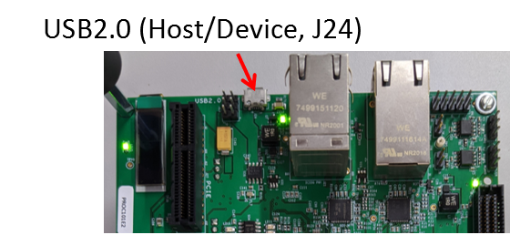
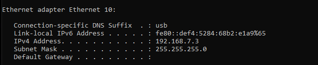
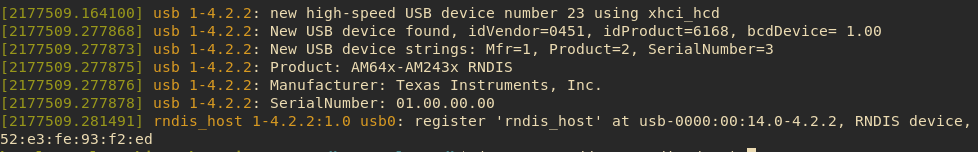
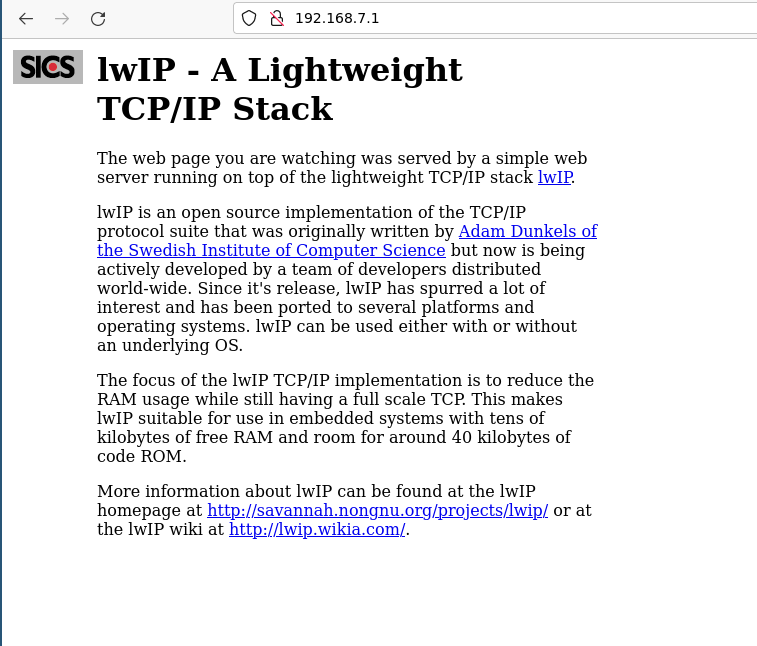

Introduction
- Note
- In this example we receive one ethernet packet at a time from RNDIS class driver and forward it to Lwip webeserver. This is a simplified design to demonstrate the use of RNDIS net class driver thus to achive better throughput, further optimizations are required.
- This example also implements a DHCP server which will provide a static ip address to HTTPD web server. Moreover it allocates ip address to the RNDIS Host PC as well.
- Refer Enet LwIP HTTP Server On Bare Metal (No-RTOS) to know more about http web server using lwip( TCP/IP) stack.
- Once RNDIS device enumearation is successful, AM64x-EVM will be recognised as a separate network interface. The Network interface driver on the Host side will convert pass the ethernet traffic Via USB bus as per RNDIS protocol specification.
- To enable USB Logging for this example refer USB CDC Echo Example
Supported Combinations
| Parameter | Value |
| CPU + OS | r5fss0-0_nortos |
| Toolchain | ti-arm-clang |
| Board | am64x-evm |
| Example folder | examples/usb/device/rndis |
Steps to Run the Example
Build the example
- When using CCS projects to build, import the CCS project for the required combination and build it using the CCS project menu (see Using SDK with CCS Projects).
- When using makefiles to build, note the required combination and build using make command (see Using SDK with Makefiles)
HW Setup
- To test the application, one can use a Windows/Linux PC as a USB host
- Connect the J24 on AM64x/AM243x EVM to the USB host

USB 2.0 Host/Device Connector
Run the example
- Launch a CCS debug session and run the executable, see CCS Launch, Load and Run
- When application is running observe that rndis network device is detected by HOST PC ( Windows/linux)
- If the enumeration is successful the following should be displayed on console.
Windows
- Open command prompt and execute ipconfig. User should see a new network interface detected.

RNDIS Device Enumeration log
Linux
- Open terminal and execute dmesg command. User should see a new network interface over USB detected.

RNDIS Device Enumeration log.
RNDIS Download
- Note
- Note that this IP address to host PC and device running lwip webserver will be provided by the dhcp server running along with lwip httpd. Refer Introduction
When the http get request will be successful, following HTML page will be display.

HTTP Get request via USB( RNDIS ) successful
See Also
USB
 1.8.20
1.8.20